Getting started
Installing
HyperSeven Office runs on Macs with macOS 11 or later (Apple Silicon and Intel), and on Windows 10 and 11 (64-bit). For an Intel Mac, use Intel Mac under the Download for Mac button.
- Mac — Get the .dmg from Download, open it and drag HyperSeven Office into the Applications folder.
- Windows — Run the .exe. It installs right away and opens the app — just for your account, so no admin rights are needed — and adds shortcuts to the desktop and Start menu. To use it without installing, unzip the .zip and run HyperSeven Office.exe.
- Windows — Click Download for Windows under Download; the Microsoft Store installs the app and keeps it up to date. You can also use Installer file (.exe) below it — it installs just for your account, so no admin rights are needed, and adds shortcuts to the desktop and Start menu.
First launch
If you installed with the .exe and see “Windows protected your PC”, click More info → Run anyway. Installs from the Microsoft Store open right away.
On Windows, if you see “Windows protected your PC”, click More info → Run anyway. It shows up because the app isn't code-signed yet.
On the Mac, if macOS asks whether to open an app downloaded from the internet, click Open.
Updates
The app checks for a new version as soon as it starts and every six hours after that. When one is out, a window appears and the status bar says so. Choose Open Download Page, Later or Skip This Version.
- Fixes that don't need a new installer arrive as a “What's New” window. They take effect when you choose Restart Now, or the next time you open the app.
- Only when something must be fixed does an update window appear that can't be closed. Use Save and Quit to keep your work, then install the new version.
- To check yourself, choose or .
- Replacing the app in Applications with a new installer (on Windows, running the new .exe over the old one) keeps your documents and settings.
The window
From top to bottom: the menu bar, the toolbar, the formatting bar, document tabs, the editing area with the task pane, and the status bar.
- Mode lights — Docs (blue), Sheets (green) and Slides (orange) at the left of the menu bar show the kind of the current document by color. Click one to go to an open document of that kind, or to create one; Shift-click always creates a new one.
- The right end of the menu bar holds Find a Command, AI, Shortcuts, Task Pane and Support buttons, plus Sign in. Click the logo on the left for app info. Open this manual with .
- Find a Command ⌘K — no need to know where a menu lives. Type a few letters of a command and run it. It's the same key in every HyperSeven tool.
- Menus change with the document. Documents, Sheets and Slides each have their own menus. Inside a table a Table menu appears, selecting an object adds an Object menu, and PDFs get a PDF menu.
- The formatting bar has styles, font, size, bold, italic, underline, strikethrough, superscript and subscript, text color, highlight, alignment, line spacing, numbering and bullets.
- Document tabs appear once two or more documents are open. Each tab shows the format, and a ● marks unsaved changes. With many tabs they narrow, and the current document's tab always stays visible.
- Markup pen — draw and highlight on the document with the pen button at the bottom right of the document window. Markup stays on screen only; it is not printed or saved into the file.
- The task pane has Object, Table, Format, Styles and Outline tabs. Turn it on and off with .
- The status bar shows page, column, line, cell and section, insert/overwrite mode and a zoom slider (10–400%). Click the page field to go to a page.
Right-click any menu item or toolbar button to change its shortcut on the spot. For a dark window, choose .
Step by step
Follow common tasks from start to finish. Every step and picture here is replayed in the real app and re-captured for each release.
Write a one-page notice
Make the title large and centered, add a page number, and save as a Hangul file and a PDF.
Type the title and body in a new document. Each Enter starts a new paragraph.
Drag over the title to select it. On the formatting toolbar, click Bold, type 20 in the font size box, and click Center.
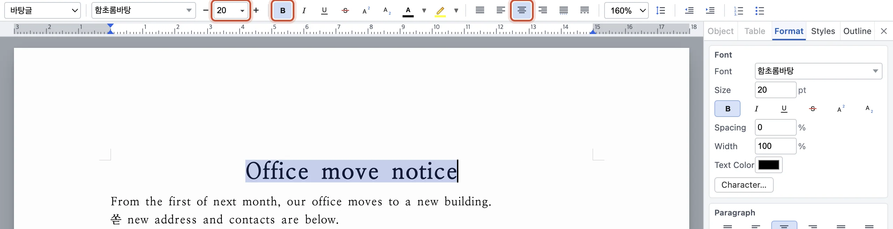
Choose , pick the position and style, then click Insert.
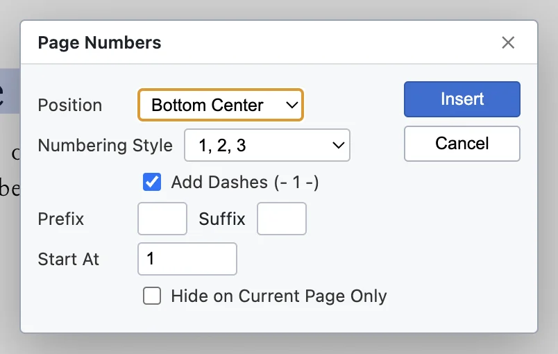
Press ⌘S (Ctrl+S on Windows) to save. The first time, choose a name and a format (HWP, HWPX or DOCX). For a PDF, choose .
- Start from a ready-made form in .
- Most Hancom Hangul shortcuts work the same way. See every shortcut in .
Edit a received Hangul file and send it as Word
Open HWP, HWPX and DOCX files directly, edit them, and save in the format the recipient uses. Formatting stays as it was.
Double-click the file, drag it onto the app window, or press ⌘O (Ctrl+O on Windows). The lights at the top show the kind of the current document (Docs, Sheets, Slides) by color.
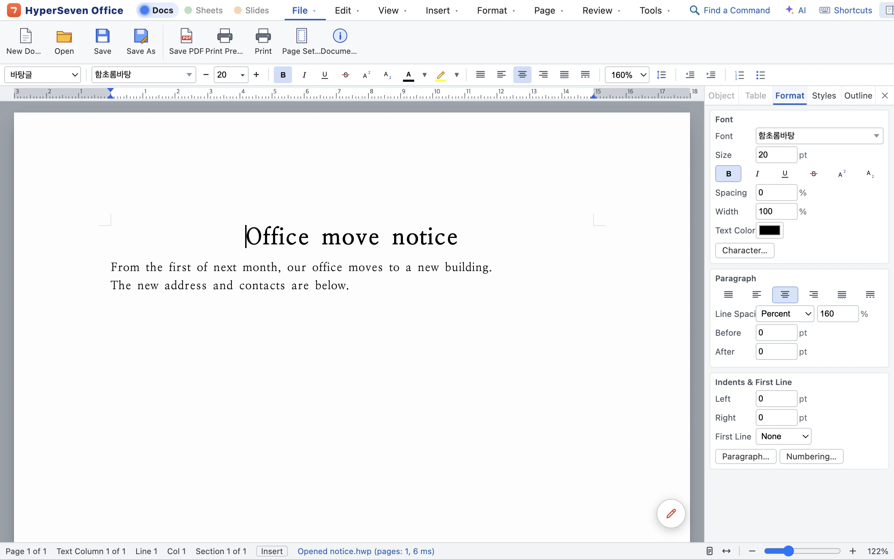
Click where you want to edit and type. ⌘S saves in the original format (HWP).
To send it as Word, choose . The original HWP file stays as it is.
- You can also save as PDF, HTML, TXT or an image (PNG), all from .
- Password-protected documents open too. Enter the password when asked.
Insert and fill a table
Pick the size on the table button's grid, then fill the cells, moving with Tab.
Click Insert on the menu bar to switch the toolbox, then click the Table button. Click the size you want on the grid (here 3 × 2).
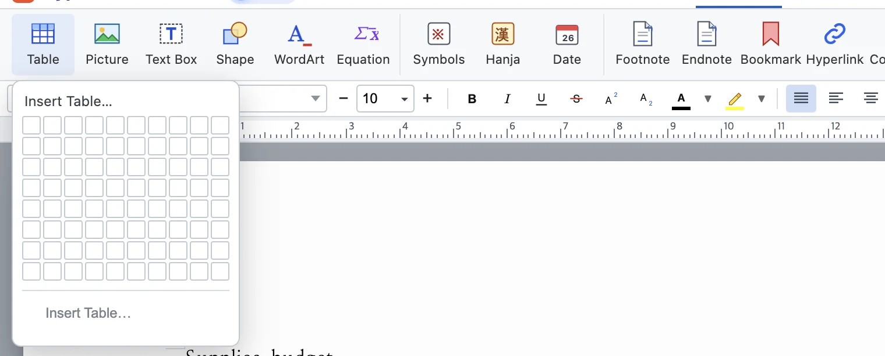
Type and press Tab to go to the next cell. Tab in the last cell adds a row.
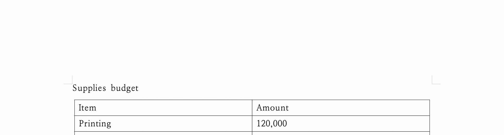
- Click inside a table and a Table menu appears on the menu bar, with row and column insertion, merging and formulas.
- As in Hangul, select a cell block with F5 and press M to merge the cells.
- Text separated by tabs or commas becomes a table at once with .
Mark up with the markup pen
Draw and highlight on the document as with a red pen on paper. Markup stays on screen only; it is not printed or saved into the file.
Click the pen button at the bottom right of the document window, or , to show the pen tools. Choose the red pen, highlighter or eraser, and a color.
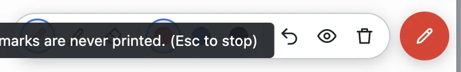
Drag to draw under the words to fix. Strokes stick to the text and move with it. Press Esc to put the pen away.
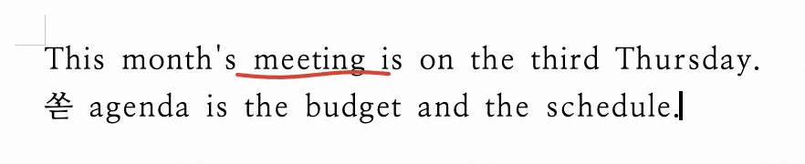
- With markup in place, ask HyperAI to “apply my markup”; it reads where you drew and proposes edits.
- To print the markup too, turn on Print markup in the print window.
Add a total and other functions
Type = in a cell and the first letters of a function name, and a list appears. Pick a function, then drag over cells to add the range.
Enter the items and amounts. Tab moves to the cell on the right; Enter moves to the first cell of the next row.
In B5, type = and then SU. The function list appears.
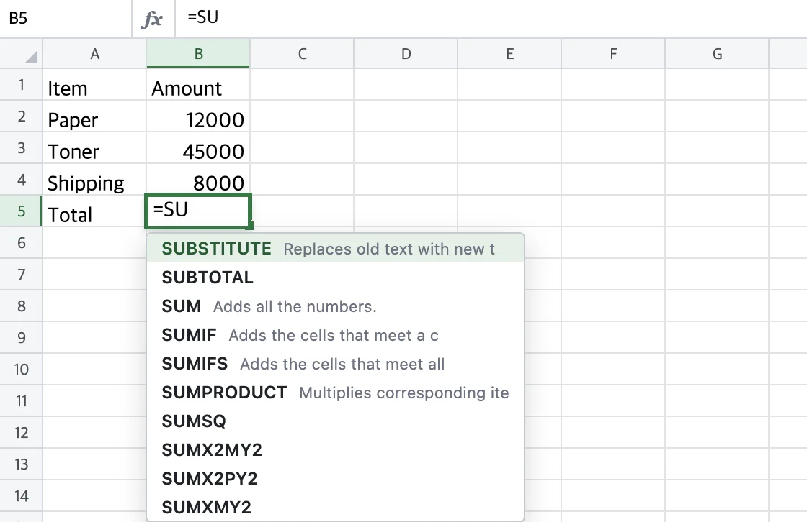
Click SUM in the list to insert =SUM(. Then drag from B2 to B4 to add the range. The hint above the cell says the same.
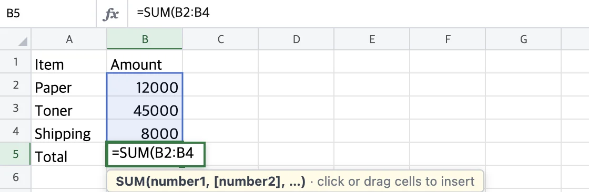
Press Enter to get the total. The app adds the closing parenthesis. Change an amount and the total updates by itself.
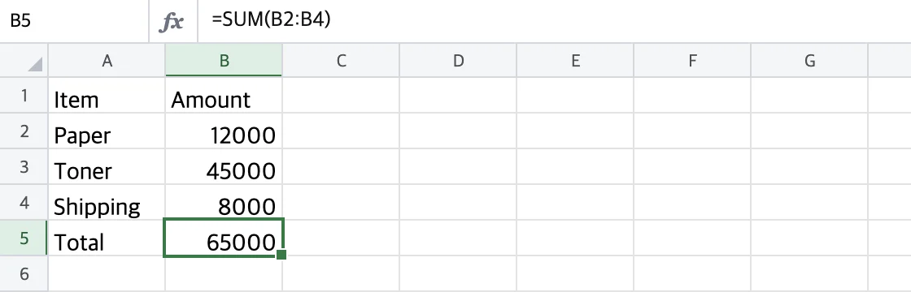
- Select the empty cell under the numbers and choose to insert =SUM(…) automatically.
- Not sure which function you need? Find it in .
- If Korean input is on and you type =ㄴㅕㅡ, it becomes =SUM right away. Korean text inside quotes stays as it is.
Make a chart
Select the data and pick a chart type; the chart appears at once and follows your edits.
Enter the headers and values, then drag from A1 to B5 to select them.
Choose . Drag the chart to move it and drag a corner to resize it.
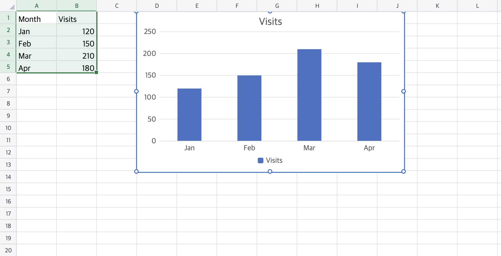
- Select the chart and change its type, title and legend in .
- To put a table or chart into a document or slides, use ; it updates when you change the values in the sheet.
Create a presentation
Click Slides in the lights at the top and a new presentation opens at once. Click a title box once and start typing.
Click the title and subtitle boxes and type.
In , pick a theme you like and click Change. You can change it again at any time.
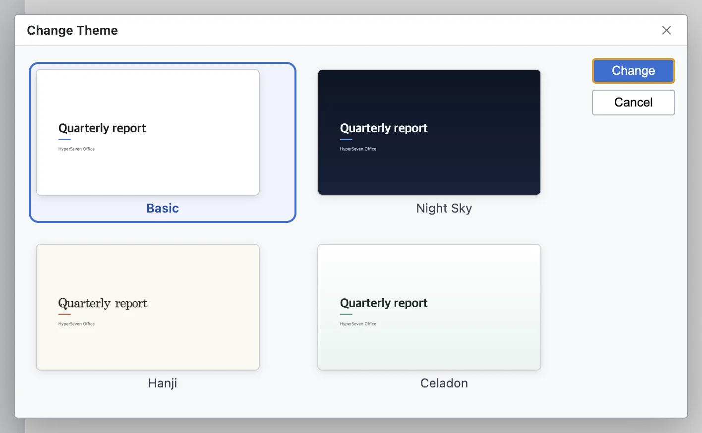
Choose and type in the content box. Each Enter adds a bullet line; Tab indents it one level.
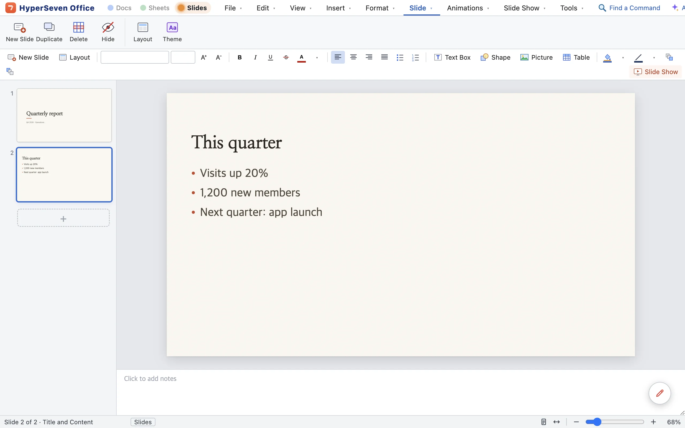
Start the show with (F5). Advance with the arrow keys or a click, and press Esc to end.
- To turn a document into slides, choose in the document. Each heading becomes a slide.
- When shapes overlap, hold ⌥ and click to select the shapes underneath in turn.
Edit and sign a PDF you received
Fix the text of a PDF right where it is, add a handwritten signature and save. No need to convert it to Hangul or Word first.
When you open a PDF, a PDF menu appears and the toolbar switches to PDF tools.
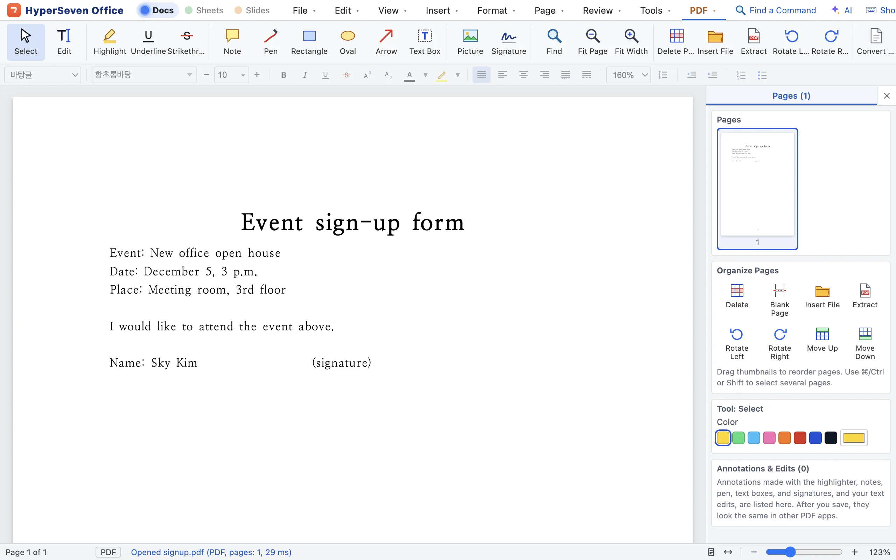
To fix text, choose and click the text. An edit box opens in place with the same font and size, with the cursor where you clicked. When you are done, click outside it or press ⌘Enter.
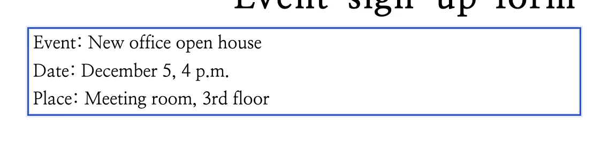
For a signature, choose , sign in the box with your mouse or trackpad, then click Place. You can also type your name in a handwriting font or use a picture of a stamp. Signatures you make are remembered for next time.
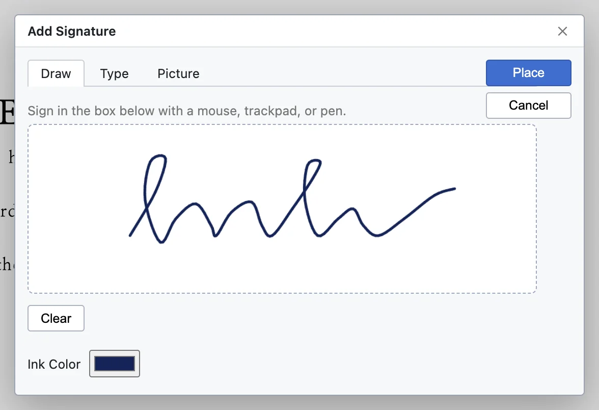
Click where the signature goes. Drag the placed signature to move it, or drag a corner to resize it.
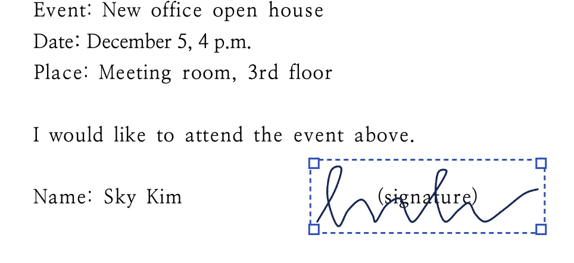
Press ⌘S (Ctrl+S on Windows) to save. The edited text and the signature go into the PDF, so they look the same in any other PDF app.
- For highlight, underline or strikethrough, drag over the text, then choose from . Notes, pen, shapes and text boxes are in the menu too.
- Delete pages, insert pages from another PDF (merge) or extract chosen pages to a new PDF from .
- For heavy changes, choose and edit it freely as a document.
- Scanned pages and vertical text can't be edited. Password-protected PDFs open for viewing only.
Turn on HyperAI
HyperAI reads your document and proposes edits. Connect it with your own Claude API key or an AI model on your computer (Ollama).
Open the HyperAI panel on the right with the AI button on the menu bar or .
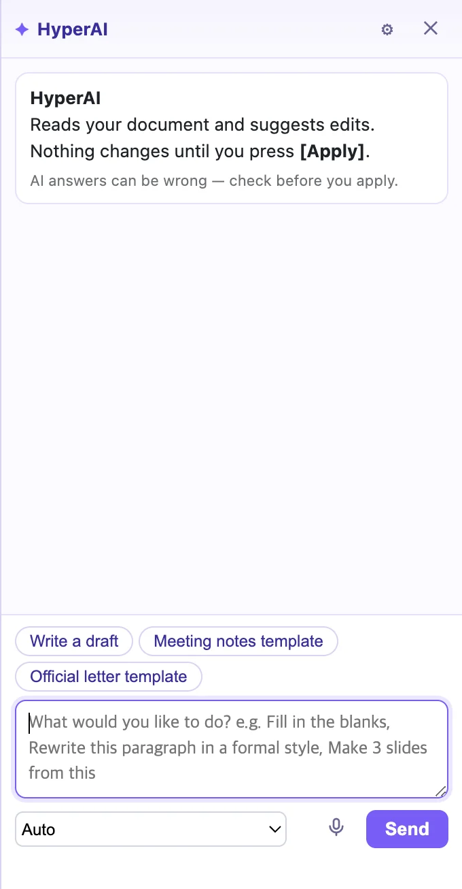
Click the gear (⚙) at the top of the panel to open the connection screen. Sign in (Apple, Google or Kakao), then enter your Claude API key or choose a model on your computer.
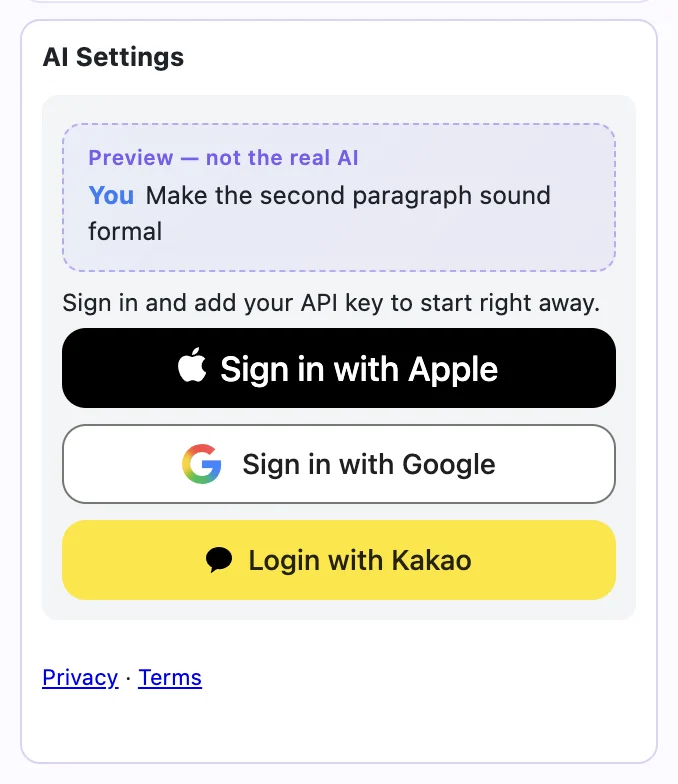
For a model on your computer, choose Model on This Computer (Ollama) in the level menu at the bottom of the panel. Install Ollama and download a model; then just enter its address. Running on this computer keeps your document on it, with no usage fees.
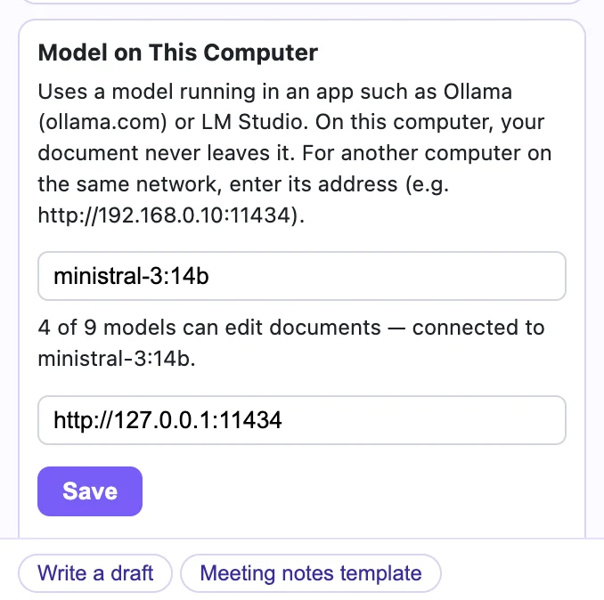
- Answers appear as they are written, and the Send button turns into Stop while it runs. Proposed edits only enter the document when you click Apply, and ⌘Z undoes them.
- Select text and right-click to polish it with HyperAI right away.
- Connecting HyperAI is free. AI usage is billed to your own key by Anthropic.
Edit documents with an AI agent (MCP)
Connect HyperSeven Office to an AI agent such as Claude Code or Claude Desktop, and the agent reads and edits Hangul, Word, Excel and PowerPoint files directly. It comes inside the app, so there is nothing else to install.
Choose to see the commands. For Claude Code, run the first command once in Terminal. For Claude Desktop, add the second box to mcpServers in its settings file (claude_desktop_config.json) and restart it. Copy next to each box copies it.
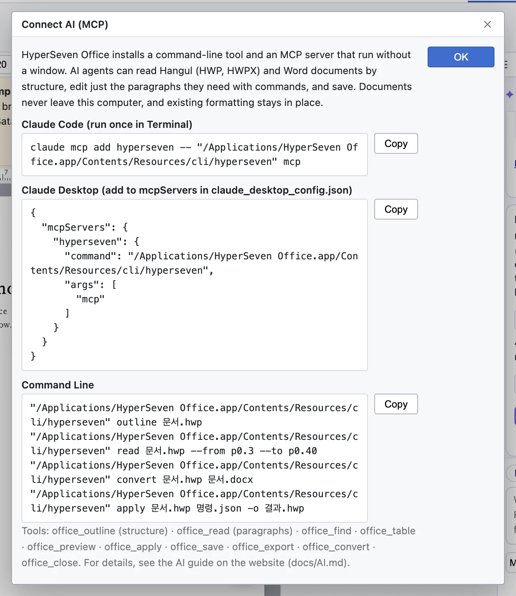
Ask the agent in plain words, for example “In notice.hwp, change the move date to the 15th of next month.” The agent looks at the document structure (office_outline), reads only the paragraphs it needs (office_read), changes just those spots (office_apply) and saves (office_save).
Open the edited file with . Only what you asked for has changed; formatting such as the title size and bold stays as it was.
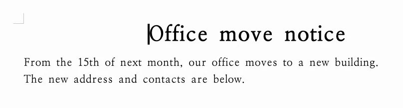
- Saving over the original keeps the previous file as one .bak copy.
- Excel and PowerPoint files use the same tools. The tool and command list and the command line are in AI agents.
- Documents are handled only on this computer. HyperSeven Office sends nothing out; only the text the agent reads goes to that agent's AI.
Report a problem
If something looks wrong, report it from the app. A few lines on what you did help a lot.
Choose , describe what happened and click Send. Your document's content is not sent; you choose whether to attach a picture.
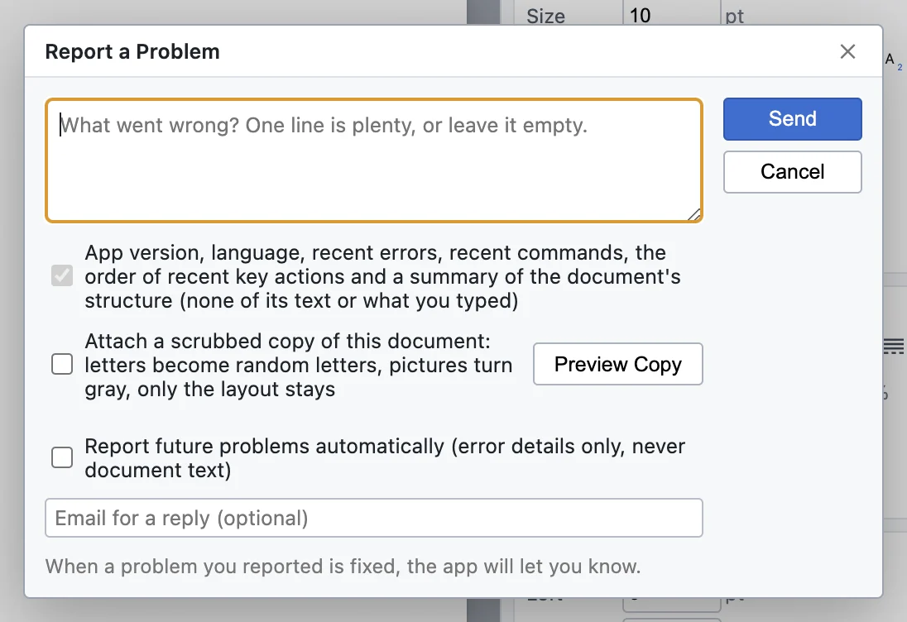
- If the app closes before you save, it asks on the next start whether to restore. Click Restore to get back what you typed.
Opening and saving
Your files, as they are
Open what you receive and save it in the format the other side uses. They open it in the program they already have.
| Format | Open | Save |
|---|---|---|
| Hangul HWP (5.x) | Yes · distribution documents are read-only | HWP |
| Hangul HWPX | Yes · including password-protected files | HWPX |
| Word DOCX | Yes | DOCX · keeps the original structure |
| Older Word DOC · RTF · ODT | Yes | Saved as a new DOCX (the original is untouched) |
| Excel XLSX · XLSM | Yes | Same format |
| Older Excel XLS · ODS · HTML tables | Yes | Saved as XLSX |
| CSV · TSV | Yes | CSV (you're warned if there are several sheets) |
| PowerPoint PPTX | Yes | PPTX |
| Older PowerPoint PPT | Yes | Saved as a new PPTX |
| Yes | Your edits are written on top of the original | |
| Text · Markdown · HTML | Yes | TXT · HTML |
Not supported: password-protected HWP 5.x, documents locked with DRM or certificates, HWP 3.0 and earlier, and Word 95 and earlier. If you open one of these — or a file from another app such as Pages, Numbers or Keynote — the app tells you why it can't.
Opening
- ⌘O, or double-click in Finder. Opening several files at once puts them in tabs of one window.
- You can also drop files on the window. Font files are added as fonts, and images go where you drop them.
- keeps the last ten.
Saving
- ⌘S and ⇧⌘S.
- saves a copy as HWP, HWPX, DOCX, PDF, HTML, TXT or PNG. PNG exports the current page or every page at 150 or 300 dpi.
- In PDFs, text stays as vector text, the outline becomes bookmarks and hyperlinks stay clickable.
- Every save is read back and compared with the original, and you're told if anything differs. If changing format would drop something, you're asked before saving.
New documents and templates
- ⌘N starts with Hamchorom Batang 10 pt, 160% line spacing, on A4.
- ⌃N, D lets you pick HWP, HWPX or DOCX up front.
- ⌃⌥N offers a blank document and seven Korean-format templates: official letter, bulleted report, meeting minutes, business trip request, leave request, résumé and notice. Preview the first page, double-click to open.
- turns the current document into slides, and and open other kinds. The Docs, Sheets and Slides lights at the top do the same.
Autosave and recovery
Changed documents are autosaved every minute by default; set 1–60 minutes in › File. Autosaves stay on your Mac. If the app quits unexpectedly, a Document Recovery window appears the next time you open it. PDFs and password-protected documents aren't autosaved.
Passwords
- Opening a protected file asks for its password. This works for older doc/xls/ppt files, Office (DOCX, XLSX, PPTX) files and HWPX.
- sets, changes or removes a password (four characters or more) on HWPX, DOCX, XLSX and PPTX files. HWP can't take a password.
- Password-protected PDFs open once you enter the password, but can't be edited or reorganized.
Writing
Characters and paragraphs
- Character… ⌘L — the Basic tab sets font, size, width, spacing, baseline shift and attributes (bold, italic, underline, strikethrough, outline, shadow, emboss, engrave, super- and subscript); Advanced covers shadow, underline, emphasis marks and kerning; there's also a Borders/Background tab.
- Paragraph… ⌘T — alignment, margins, first line, line spacing, space before and after, and how lines break (Korean by word or character, English by word, hyphen or character). The Advanced tab has widow/orphan control, keep with next and more.
- Styles… F6 — apply, add and edit styles. Changing a style updates every paragraph that uses it. Styles 1–10 are on ⌃1–⌃0.
- Numbering and outlines — , , and raising or lowering levels.
Inserting
- Picture ⌃N, I — bmp, gif, jpg, png, webp and svg. Object properties offer grayscale, black-and-white, brightness, contrast and cropping.
- Shapes — pick one from and drag on the page; a single click inserts it at the default size.
- Text Box ⌃N, B · Equation ⌃N, M (Hangul equation script) · Symbols ⌘F10 · Hanja ⌘F9
- Footnote ⌃N, N · Endnote ⌃N, E · Bookmark ⌃K, B · Hyperlink ⌃K, H · Cross-reference ⌃K, R · Field ⌃K, E
- Charts in documents are saved as pictures; double-click one to edit it again.
- Comments — add, edit and delete them from . The author name comes from the user name in Settings.
Find and replace
⌘F and ⇧⌘H, with options for case, whole words, ignoring spaces, wildcards (? *) and regular expressions. ⌘G finds the next match and ⌥G goes to a page, line, section or bookmark.
More
- Table of contents and index — and .
- Mail merge and labels — .
- AutoFill My Info — fills blanks such as name, department and phone number from what you saved in .
- Compare Documents and Redact Personal Info — in the menu.
- Linked sheet values — in Sheets, , then in a document. When the sheet changes, brings it up to date.
- Insert File… ⌃O — inserts another document at the cursor.
Tables
- Creating ⌃N, T — 5 rows by 5 columns by default, up to 500 rows and 62 columns. You can also select text and use .
- Selecting cells — inside a table, F5 starts a cell block and ⇧F5 extends it. In a cell block, ⇧+arrow keys resize cells.
- One-key commands in a cell block — M Merge Cells, S Split Cells, L borders, C shading, P Table/Cell Properties, H·W equal heights and widths, A auto fill.
- Rows and columns — ⌃Return adds a row, ⌃⌫ deletes one, ⌃I·⌃D open the insert and delete windows.
- Sizing — drag a table line to change column widths and row heights. Lines between columns keep the table width; the right edge widens the table. One undo puts it back.
- Formulas — ⌃N, F uses SUM, AVG, PRODUCT, MIN, MAX and COUNT with LEFT, RIGHT, ABOVE, BELOW or cell names like A1. The result goes in as text. Block sum, average and product are ⌃⇧S·⌃⇧A·⌃⇧P in a cell block.
- Formatting — ten Table Styles, Cell Borders/Shading, sorting by up to three keys, thousands separators, Split Table ⌃N, A and Join Tables ⌃N, Z.
Pages and printing
- Page Setup… F7 — A4, A3, A5, B4, B5, Letter, Legal, Korean book size or custom; orientation, binding (single, facing, top), seven margins, and whether it applies to the current section or the whole document.
- Header/Footer… ⌃N, H — separate ones for all, even and odd pages. Press ⇧Esc to return to the body.
- Page Numbers… ⌃N, P — 11 positions, 17 styles, dashes and decorations, a starting number. To hide it on one page, use ⌃N, S.
- Columns… — 1 to 10 columns: normal, balanced or parallel, with an optional line between.
- Breaks — page ⌃Return, column ⌃⇧Return, multi-column ⌃⌥Return, section ⌥⇧Return.
- Page Borders…, Master Page…, Footnote/Endnote Format… and Section… ⌃N, G are in the menu.
Printing
⌘P sets the range (all, current page, current section or pages like 1-3, 5, 7~9), odd or even pages, reverse order, 2/4/6/8/9/16 pages per sheet, booklet printing and a text watermark. The same window can Save as PDF, and it remembers your last settings. In , ← → turn pages.
Spelling and AutoCorrect
- Red wavy underlines — Check Spelling as You Type is on by default and marks words that may be misspelled. Right-click one for suggestions. Underlines never print or appear in PDFs; turn them off with .
- Spelling… F8 — walks through issues from the cursor onward, with Change, Change All, Ignore, Ignore All and Add to Dictionary.
- My Dictionary — add up to 5,000 names and terms you use often; they're recognized even with Korean particles attached. Words repeated more than three times in a document aren't underlined.
- AutoCorrect and Auto Korean/English Switch are on by default. AutoCorrect entries are on ⇧F8.
- Word Count — .
Spell check covers Korean in documents (not yet Sheets, Slides or PDF). It checks word by word against the dictionary, so it doesn't correct grammar in context or spacing in general. The dictionary is hunspell-dict-ko 0.7.94.
Sheets (Excel)
Excel files (XLSX, XLSM, XLS, ODS, CSV and HTML tables from banks) open in Sheets. Cells and formatting you don't touch are saved exactly as they were.
- Functions — over 420. A cell using a function the app doesn't know shows the value saved in the file. XLSX files show their saved values on open rather than recalculating.
- Format Cells… ⌘1 — Number, Alignment, Font, Border and Fill, including a format that writes amounts out in Korean.
- Conditional Formatting — highlight rules, top/bottom, data bars, color scales, formula rules and a rule manager.
- Data — sorting, Filter ⌘⇧L, Text to Columns…, Remove Duplicates…, Data Validation…, Name Manager… and PivotTable… (built with formulas such as SUMIFS).
- Charts — column, bar, line, pie, area and scatter, saved as standard Excel charts.
- View — Freeze Panes (top row, first column) and Gridlines. Right-click a sheet tab to move it or set a Tab Color.
- Linking to documents — , paste into a document or deck, and keeps it current.
- Printing — prints the current sheet using the paper, margins, scale and print titles saved in the file. In Sheets you can set the .
| Key | Action |
|---|---|
| ⌘+arrow · ⇧+arrow | Jump to the edge of data · extend the selection |
| F2 · Delete | Edit cell · clear contents |
| ⌘D · ⌘R | Fill down · fill right |
| ⌘; · ⌘⇧; | Today's date · current time |
| ⌘1 | Format Cells |
| ⌘⇧1 ⌘⇧4 ⌘⇧5 | Number · currency · percent |
| ⌘- · ⌘⇧= | Delete · insert cells |
| ⌥= | AutoSum |
| ⌘PageUp · ⌘PageDown | Previous · next sheet |
| ⇧F11 | Insert sheet |
| F4 (formula bar) | Cycle $ in references |
In Sheets, ⌘ and ⌃ do the same thing.
Slides (PowerPoint)
PowerPoint files (PPTX, PPSX, POTX and older PPT) open in Slides. Older PPT files are saved as new PPTX files.
- New decks start from four themes and seven layouts.
- Slides from a document — in a document, . Headings and body text become slides; right-click a slide to jump to its source paragraph.
- Editing — add text boxes, shapes, pictures and tables; align, order, group and rotate. ⌘M (or ⌃M) adds a slide, ⌘D duplicates, ⌘G·⌘⇧G group and ungroup, Return or F2 edits text. Arrow keys nudge, ten times farther with ⇧.
- Animations — five entrance, two emphasis and four exit effects, starting on click, with previous or after previous, plus eight Transitions.
Presenting
| Key | Action |
|---|---|
| F5 · ⇧F5 | From Beginning · From Current Slide |
| ⌥F5 | Presenter View — current and next slide, notes, elapsed time |
| → Space Return · click | Next |
| ← ⌫ | Previous |
| Number + Return | Go to that slide |
| B · W | Black screen · white screen |
| Esc | End the show |
With two displays, the audience view fills the other display and Presenter View stays on yours.
Opening a PDF adds a PDF menu. For a walk-through, follow Edit and sign a PDF you received.
- Annotations — Mark Text (highlight, underline, strikethrough), comments, Draw (pen, rectangle, ellipse, line, arrow), text boxes, Add Image… and Add Signature…. Select an annotation to delete it with Delete or nudge it with the arrow keys.
- Edit Text & Images — change body text and find and replace it.
- Organize Pages — Delete Page, Insert Blank Page, Insert Pages from File (Merge PDFs)…, Extract Selected Pages to New PDF, reorder and rotate pages.
- Convert to Hangul Document — turns a PDF into a document you can edit freely. Tables without lines may come out differently.
- Saving — your edits are written on top of the original.
Vertical text, rotated text and scanned pages can't be edited as text. Password-protected PDFs can be viewed but not edited or reorganized.
Fonts
- The font menu shows each font in its own face. Search by name across this document's fonts, recent fonts, Hangul and Word fonts and every font on your Mac.
- Drop .ttf or .otf files on the window, or use . opens the font folder and removes fonts.
- Nanum Gothic, Nanum Myeongjo, Pretendard and Song Myung are built in.
- When a document's font is missing, a similar one is drawn, but lines still break at the original font's widths. If Hangul is installed on your Mac, its fonts such as Hamchorom are used too.
HyperAI
Open it on the right with the AI button in the menu bar or . It reads your documents, sheets and slides and turns plain-language requests into proposed edits. To set it up the first time, see Turn on HyperAI.
Ways to connect
- Sign in — sign in with Apple, Google or Kakao to turn on the connection. Connecting is free.
- Your Claude API key — enter an Anthropic API key (
sk-ant-…) in the settings under the gear (⚙) at the top of the panel. The key is encrypted in this computer's keychain, and usage is billed to your own Anthropic account. - A model on your computer — choose Model on This Computer (Ollama) in the level menu at the bottom of the panel and enter the address of Ollama or LM Studio. Running on this computer keeps your document on it, with no usage fees. Another computer on your network (for example
http://192.168.0.10:11434) works too.
Using it
- Levels — at the bottom of the panel choose Auto, HyperAI Lite, HyperAI, HyperAI Pro or HyperAI Max. Auto picks for each request; higher levels are more thorough but slower and cost more.
- Live answers and Stop — answers appear as they are written, and the Send button becomes Stop while it runs.
- Apply — proposed edits arrive as cards. Nothing changes until you pick one and click Apply; clicking a card jumps to that place in the document. ⌘Z undoes it.
- Right-click — select text and right-click to polish just that part with HyperAI.
- With markup — mark up with the review pen, then ask to “apply my markup”; HyperAI reads where you drew.
- Dictation — use the microphone button to speak your request.
- You can send just a selection, and copy-protected distribution documents are never sent. In the English interface, HyperAI answers in English.
Account and support
Every feature is free. Editing needs no account; you sign in to connect HyperAI.
- Sign in — use Sign in at the right of the menu bar with Apple, Google or Kakao. HyperSeven Office and CAD share one account.
- HyperAI — after signing in, connect your own Claude API key or a model on your computer; it is free. AI usage is billed to your own key by Anthropic.
- Support HyperSeven — buy us a coffee from ♥ Support on the menu bar or . The Support page also has a Bitcoin address.
Connecting AI agents (MCP and the command line)
A command-line tool and an MCP server run inside the app without opening a window; there's nothing else to install. Agents such as Claude Code and Claude Desktop read Hangul (HWP, HWPX), Word, Excel and PowerPoint files by their structure, change only what needs changing, and save. For the steps with pictures, see Edit documents with an AI agent.
Connecting
Copy the command from :
claude mcp add hyperseven -- "/Applications/HyperSeven Office.app/Contents/Resources/cli/hyperseven" mcp
In Claude Desktop, add it under mcpServers in claude_desktop_config.json:
"hyperseven": {
"command": "/Applications/HyperSeven Office.app/Contents/Resources/cli/hyperseven",
"args": ["mcp"]
}
On Windows, copy the command from the same window. It runs the app (HyperSeven Office.exe) with ELECTRON_RUN_AS_NODE=1 and passes it resources\cli\hyperseven.cjs, because many agents can't start a .cmd file directly. For your own terminal, use resources\cli\hyperseven.cmd in the install folder.
Tools, in order
office_outline (structure only) → office_read (a paragraph range, addresses like p0.12) → office_find · office_table → office_preview / office_apply (edit operations) → office_save. Also office_export, office_convert and office_close.
Document edits are replace_text, set_paragraph, insert_paragraphs, fill_field and set_cell. Formatting is never sent; whatever formatting is in place stays. Excel and PowerPoint use the same tools (set_cells, add_sheet, add_slide, set_shape_text and more), and protected files take a password.
Command line
hyperseven outline report.hwp hyperseven read report.hwp --from p0.3 --to p0.40 hyperseven convert report.hwp report.docx hyperseven apply report.hwp edits.json -o result.hwp # --dry to preview
- Saving over the original leaves a
.bak. - Distribution documents aren't opened. PDFs aren't handled on the command line; page layout and PDF export happen in the app.
- A short summary for agents lives in llms.txt.
Keyboard shortcuts
The Windows version uses the Hangul Windows keys, just as in Hangul. The table below lists Mac keys; for the Windows list, see .
On the Mac, the Hangul Mac layout comes first, and Hangul Windows keys that don't clash work too. In you can switch to “Prefer Hangul Windows keys” or change keys one by one.
Two-step keys — ⌃N, T means press ⌃N, then T within four seconds. You can keep holding ⌃ for the second key.
Depending on your keyboard settings, F1–F12 may need fn. Keys macOS reserves, such as ⌘Q ⌘H ⌘M ⌘Tab ⌘Space, can't be reassigned.
File · Edit
| Action | Keys |
|---|---|
| New Document · Templates | ⌘N · ⌃⌥N |
| Open · Insert File | ⌘O · ⌃O |
| Save · Save As | ⌘S · ⇧⌘S |
| Page Setup · Print | F7 · ⌘P |
| Close Document · Quit | ⌘W · ⌘Q |
| Undo · Redo | ⌘Z · ⇧⌘Z |
| Paste Special · Copy Format | ⌃⌥V · ⌥C |
| Select Block · cell block · Select Objects | F3 · F4 · F11 |
| Find · Find and Replace | ⌘F · ⇧⌘H |
| Find Next · Find Previous · Go To | ⌘G · ⇧⌘G · ⌥G |
| Move paragraph up · down | ⌥⇧↑ · ⌥⇧↓ |
| Find a Command | ⌘K |
View · Insert
| Action | Keys |
|---|---|
| Zoom In · Zoom Out | ⌘= · ⌘- |
| Fit Page · Fit Width · 100% | ⌃G, P · ⌃G, W · ⌃G, Q |
| Formatting Marks · Paragraph Marks | ⌃G, C · ⌃G, T |
| Full Screen | ⌃⌘F |
| Table · Picture · Text Box | ⌃N, T · ⌃N, I · ⌃N, B |
| Equation · Caption | ⌃N, M · ⌃N, C |
| Footnote · Endnote | ⌃N, N · ⌃N, E |
| Symbols · Hanja | ⌘F10 · ⌘F9 |
| Date text · date code | ⌃K, D · ⌃K, C |
| Bookmark · Hyperlink · Field | ⌃K, B · ⌃K, H · ⌃K, E |
| Line break · non-breaking space | ⇧Return · ⌃⌥Space |
Format · Paragraph · Page
| Action | Keys |
|---|---|
| Character · Paragraph · Styles | ⌘L · ⌘T · F6 |
| Bold · Italic · Underline | ⌘B · ⌘I · ⌘U |
| Superscript · Subscript · Plain Text | ⌃⌘P · ⌃⌘S · ⌃⌘C |
| Bigger · smaller text | ⇧⌘E · ⇧⌘R |
| Wider · narrower spacing | ⇧⌘W · ⇧⌘N |
| Wider · narrower character width | ⇧⌘K · ⇧⌘J |
| Styles 1–10 | ⌃1 ~ ⌃0 |
| Justify · Align Left · Center · Align Right | ⌃⇧M · ⌃⇧L · ⌃⇧C · ⌃⇧R |
| More · less line spacing | ⌥⇧Z · ⌥⇧A |
| Quick hanging indent | ⇧Tab |
| Header/Footer · Page Numbers | ⌃N, H · ⌃N, P |
| Page Break · Column Break | ⌃Return · ⌃⇧Return |
| Spelling · Shortcut Help · Settings | F8 · ⇧⌘/ · ⌘, |
Moving the cursor
| Action | Keys |
|---|---|
| Start · end of line | ⌘← · ⌘→ |
| By word | ⌥← · ⌥→ |
| By paragraph | ⌘↑ · ⌘↓ |
| By page | ⌥⌘↑ · ⌥⌘↓ |
| Start · end of document | ⌘PageUp · ⌘PageDown |
| Delete word · previous word | ⌘⌫ · ⌥⌫ |
Settings and info
- Settings ⌘, — [Edit] AutoCorrect, Auto Korean/English Switch, Check Spelling as You Type · [File] Autosave and interval, Clear Recent Documents · [View] Appearance, Task Pane, Language (한국어 · English) · [User] your name (used for comments) and My Info for AutoFill. Changing the language takes effect after Restart Now.
- Keyboard Shortcuts — search by name or key, browse by category or show only changed keys. Click a key to change it, ＋ to add another, × to remove; Reset All goes back to the defaults.
- About HyperSeven Office — the version, plus where the bundled fonts and dictionary come from and their licenses.
Troubleshooting
HyperSeven is built together with the people who use it. If something gets in your way, tell us in one line.
The app won't open
Follow the first launch steps. If macOS says the app isn't supported on this Mac, you have the Apple Silicon version on an Intel Mac. Download again with Download for Intel Mac under the download button and replace it.
A document looks different from Hangul
Usually it's the fonts. Installing the fonts the document uses brings it closer. If it still looks off, please send us the document — it's the most useful report we can get.
Reporting a problem
Choose (or ‘Report a Problem’ in ⌘K) and write one line, or nothing at all. The app version, error log and your recent commands come along automatically; your document's text never does.
- If the problem is how a document looks, attach a scrubbed copy. Letters become random letters, pictures turn gray, and only the layout stays. You see its first page before sending.
- You can also send from the Report button on the notice that appears when something goes wrong. Turn on automatic reports and future errors are sent on their own, with error details only.
- When a problem you reported is fixed, the app lets you know.
On the way
Tell us which features you need, and we use that to decide what comes next.
- Track changes — Word documents can show and accept changes but don't record new ones. Hangul documents don't track changes.
- Creating new OLE objects; WordArt and form objects are limited.
- Chart styling in sheets, recalculating pivots and references to other workbooks.
- 3D and chart editing in slides, and older media such as wmv.
- Context-aware spelling and general spacing correction.
HyperSeven CAD manual
The CAD manual is in preparation. For frequently used commands, press F1 while the command runs to see how to use it; ⌘K (Ctrl+K on Windows) search also shows what tools and frequently used commands do. See the CAD page for an overview.